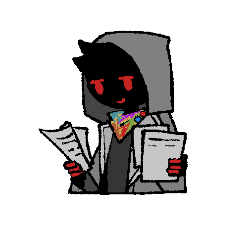

뒤바뀐 운명, 일그러진 목적...
이데올로기의 눈 (Eye of Ideology)은 Kalawakan이 2021년 12월 03일에 제작,
2022년 9월부터 대략 10명이 넘는 친구들과 함께 본격적인 세계관 설정 구축을 끝내
2024년 4월 지금까지도 계속되고 있는 나름 대규모 (자칭) 세계관입니다.

캐릭터 신청
이미지를 클릭하면 캐릭터 신청을 위한 페이지로 접속합니다.
Credit
Character gif by BITTERZHOUSE
Character info Image ( ⩌ᴗ⩌ ) by solarSUN
Character profile gif h4ck3r% . by tiki
Character info Image USACCS by yurye
Character design folder98 by bomal